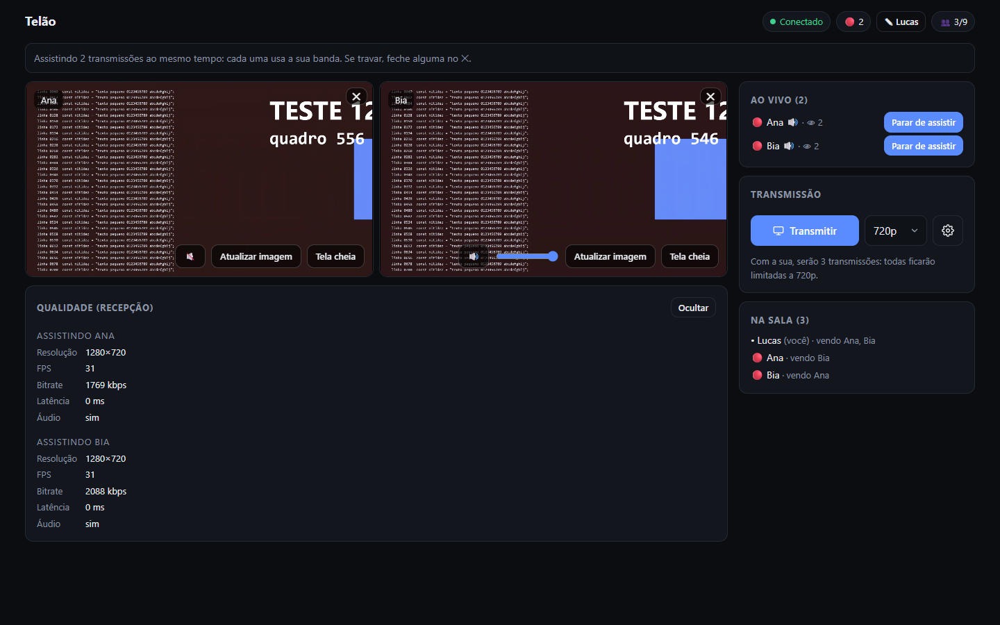
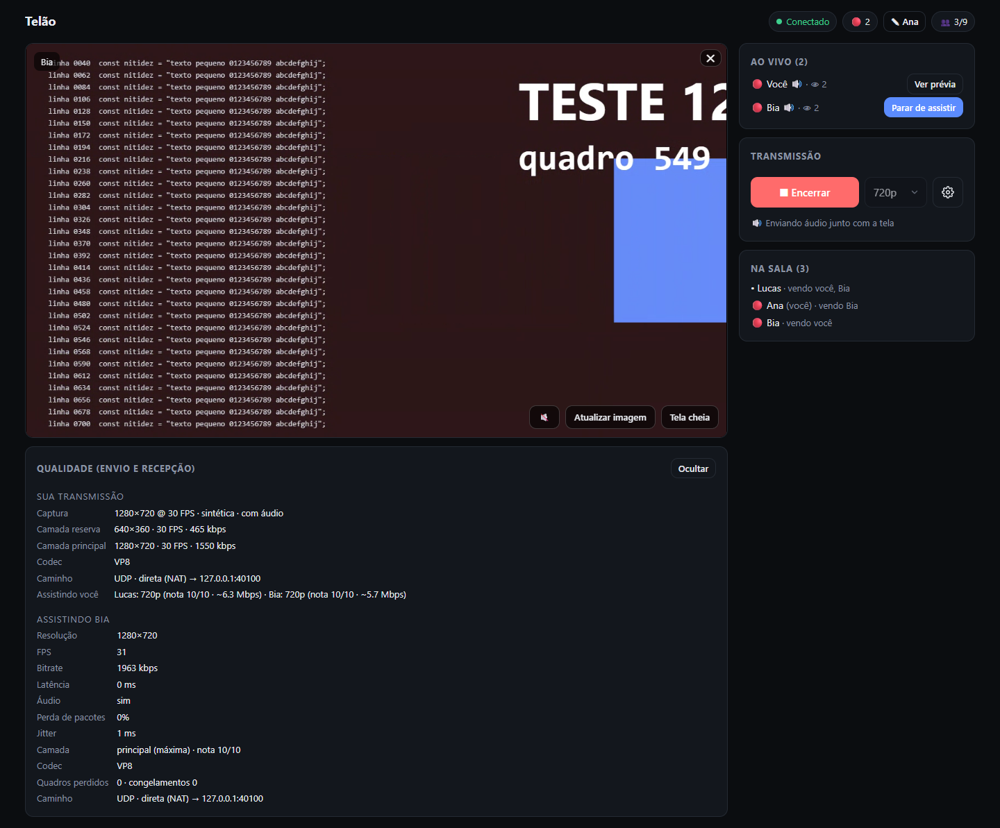
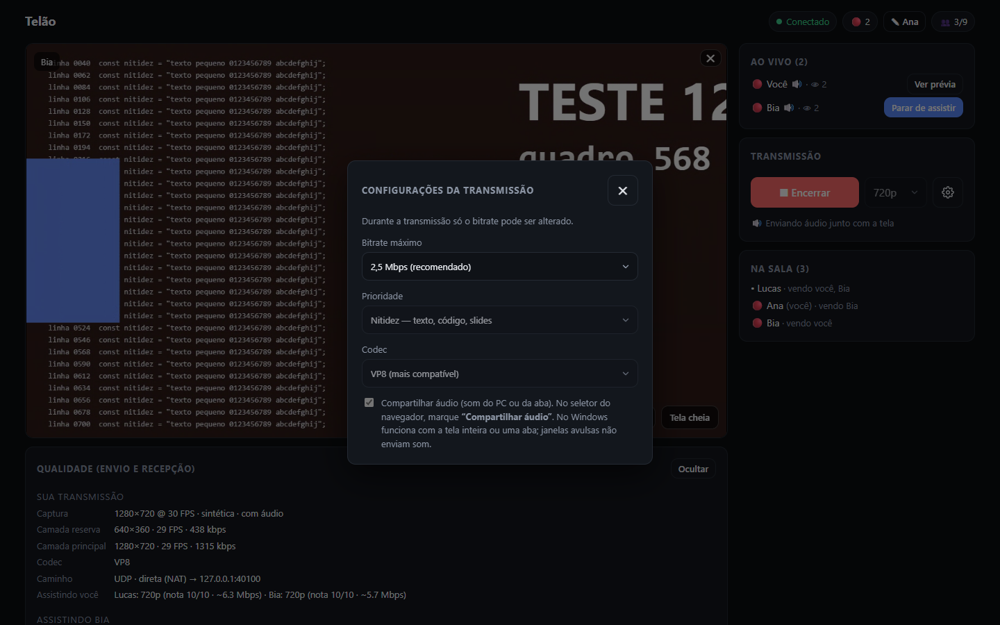
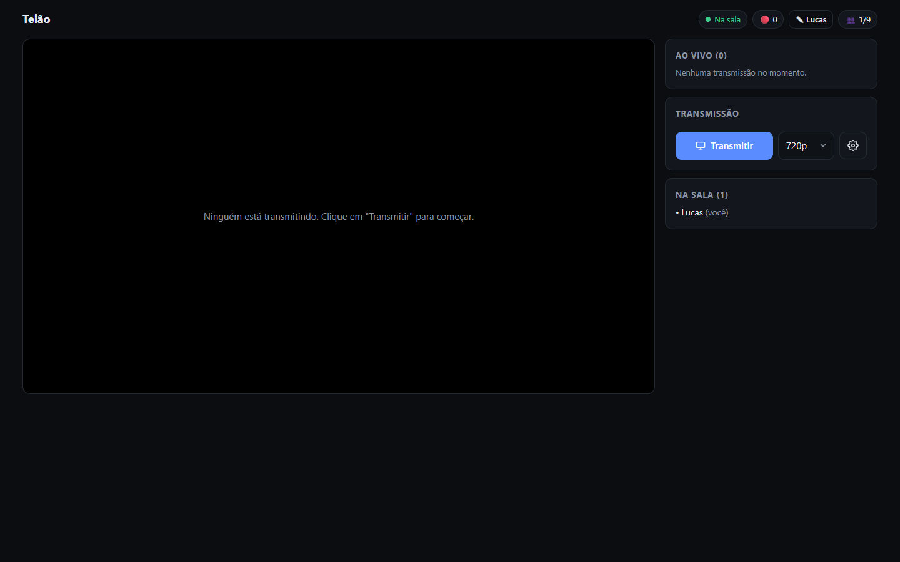

<title>Telão</title>
<link rel="preconnect" href="https://fonts.googleapis.com">
<link rel="preconnect" href="https://fonts.gstatic.com" crossorigin>
<link rel="stylesheet" href="https://fonts.googleapis.com/css2?family=Sora:wght@600;700&family=IBM+Plex+Sans:wght@400;500;600&family=IBM+Plex+Mono:wght@500&display=swap">
<style>
/* Layout: coluna única de leitura (~960px), seções empilhadas; grades de cards que viram 1 coluna no celular.
   Visual herdado do próprio app (fundo grafite, azul de ação, vermelho "ao vivo"). */
:root {
  --bg: #0b0d10;
  --surface: #13171d;
  --surface-2: #0f1217;
  --line: #242a33;
  --fg: #e8ebf0;
  --muted: #8b94a3;
  --accent: #5b8cff;
  --accent-soft: rgba(91, 140, 255, 0.14);
  --live: #ff5d5d;
  --ok: #3ecf8e;
  --warn: #f5b84c;
  --font-display: 'Sora', 'Segoe UI', system-ui, sans-serif;
  --font-body: 'IBM Plex Sans', 'Segoe UI', system-ui, sans-serif;
  --font-mono: 'IBM Plex Mono', ui-monospace, Consolas, monospace;
  color-scheme: dark;
}
@media (prefers-color-scheme: light) {
  :root:not([data-theme="dark"]) {
    --bg: #f4f5f8; --surface: #ffffff; --surface-2: #eef0f4; --line: #dde1e8; --fg: #151820; --muted: #5b6475;
    --accent: #3a68e8; --accent-soft: rgba(58, 104, 232, 0.10); --live: #e0393e; --ok: #12965f; --warn: #b77806;
    color-scheme: light;
  }
}
:root[data-theme="light"] {
  --bg: #f4f5f8; --surface: #ffffff; --surface-2: #eef0f4; --line: #dde1e8; --fg: #151820; --muted: #5b6475;
  --accent: #3a68e8; --accent-soft: rgba(58, 104, 232, 0.10); --live: #e0393e; --ok: #12965f; --warn: #b77806;
  color-scheme: light;
}

* { box-sizing: border-box; }
body { background: var(--bg); color: var(--fg); font: 16px/1.6 var(--font-body); margin: 0; }
.wrap { max-width: 980px; margin: 0 auto; padding-inline: 20px; padding-block: 40px 72px; display: flex; flex-direction: column; gap: 64px; }
h1, h2, h3 { font-family: var(--font-display); text-wrap: balance; margin: 0; }
h2 { font-size: 26px; letter-spacing: -0.01em; }
h3 { font-size: 16px; }
p { margin: 0; }
.muted { color: var(--muted); }
.eyebrow { font: 600 12px/1 var(--font-body); letter-spacing: 0.12em; text-transform: uppercase; color: var(--muted); }
section { display: flex; flex-direction: column; gap: 20px; }
.lead { color: var(--muted); max-width: 62ch; }
svg.i { width: 22px; height: 22px; flex: none; stroke: currentColor; fill: none; stroke-width: 2; stroke-linecap: round; stroke-linejoin: round; }

/* Topo */
.hero { gap: 18px; }
.brand { display: flex; align-items: center; gap: 14px; }
.logo { width: 48px; height: 48px; border-radius: 12px; background: var(--accent); color: #fff; display: grid; place-items: center; }
.logo svg.i { width: 28px; height: 28px; }
.hero h1 { font-size: clamp(34px, 6vw, 52px); letter-spacing: -0.02em; }
.hero .lead { font-size: 19px; color: var(--fg); opacity: 0.85; }
.pills { display: flex; flex-wrap: wrap; gap: 8px; }
.pill { display: inline-flex; align-items: center; gap: 8px; padding: 7px 14px; border: 1px solid var(--line); border-radius: 999px; background: var(--surface); font-size: 14px; }
.pill svg.i { width: 16px; height: 16px; color: var(--accent); }
.dot { width: 8px; height: 8px; border-radius: 50%; background: var(--live); display: inline-block; }

/* Diagrama */
.diagram { background: var(--surface); border: 1px solid var(--line); border-radius: 16px; padding: 20px; overflow-x: auto; }
.diagram svg { display: block; min-width: 680px; width: 100%; height: auto; }
.d-box { fill: var(--surface-2); stroke: var(--line); stroke-width: 1.5; }
.d-box-strong { fill: var(--accent-soft); stroke: var(--accent); stroke-width: 1.5; }
.d-title { fill: var(--fg); font: 600 15px var(--font-display); }
.d-sub { fill: var(--muted); font: 400 12.5px var(--font-body); }
.d-ico { stroke: var(--accent); fill: none; stroke-width: 2; stroke-linecap: round; stroke-linejoin: round; }
.d-line-page { stroke: var(--muted); stroke-width: 2; stroke-dasharray: 6 6; fill: none; }
.d-line-video { stroke: var(--live); stroke-width: 3; fill: none; }
.d-label { fill: var(--muted); font: 500 12px var(--font-mono); }
.d-label-video { fill: var(--live); font: 500 12px var(--font-mono); }
.legend { display: flex; flex-wrap: wrap; gap: 20px; font-size: 14px; color: var(--muted); }
.legend span { display: inline-flex; align-items: center; gap: 8px; }
.sw { width: 26px; height: 0; border-top: 3px solid var(--live); display: inline-block; }
.sw.page { border-top: 2px dashed var(--muted); }

/* Fluxo (sequência real, por isso numerado) */
.steps { display: grid; grid-template-columns: repeat(5, minmax(0, 1fr)); gap: 12px; counter-reset: step; }
.step { background: var(--surface); border: 1px solid var(--line); border-radius: 14px; padding: 16px; display: flex; flex-direction: column; gap: 10px; position: relative; min-width: 0; }
.step-head { display: flex; align-items: center; justify-content: space-between; }
.step-n { font: 500 13px var(--font-mono); color: var(--muted); }
.step .ic { width: 40px; height: 40px; border-radius: 10px; background: var(--accent-soft); color: var(--accent); display: grid; place-items: center; }
.step p { font-size: 14px; color: var(--muted); }
.who { font: 600 11px/1 var(--font-body); letter-spacing: 0.08em; text-transform: uppercase; color: var(--accent); }
@media (max-width: 860px) { .steps { grid-template-columns: repeat(2, minmax(0, 1fr)); } }
@media (max-width: 480px) { .steps { grid-template-columns: minmax(0, 1fr); } }

/* Funcionalidades */
.features { display: grid; grid-template-columns: repeat(3, minmax(0, 1fr)); gap: 12px; }
.feature { display: flex; gap: 14px; align-items: flex-start; padding: 16px; border-radius: 14px; background: var(--surface); border: 1px solid var(--line); min-width: 0; }
.feature .ic { width: 40px; height: 40px; border-radius: 10px; background: var(--surface-2); border: 1px solid var(--line); color: var(--accent); display: grid; place-items: center; flex: none; }
.feature div { display: flex; flex-direction: column; gap: 4px; min-width: 0; }
.feature p { font-size: 14px; color: var(--muted); }
@media (max-width: 860px) { .features { grid-template-columns: repeat(2, minmax(0, 1fr)); } }
@media (max-width: 560px) { .features { grid-template-columns: minmax(0, 1fr); } }

/* Telas */
.shots { display: grid; grid-template-columns: repeat(2, minmax(0, 1fr)); gap: 16px; }
figure { margin: 0; display: flex; flex-direction: column; gap: 8px; min-width: 0; }
figure img { width: 100%; max-width: 100%; height: auto; border-radius: 12px; border: 1px solid var(--line); display: block; background: #0b0d10; }
figcaption { font-size: 14px; color: var(--muted); }
figcaption b { color: var(--fg); font-weight: 600; }
@media (max-width: 640px) { .shots { grid-template-columns: minmax(0, 1fr); } }

/* Regras */
.rules { display: grid; grid-template-columns: repeat(3, minmax(0, 1fr)); gap: 12px; }
.rule { padding: 16px; border-radius: 14px; border: 1px solid var(--line); background: var(--surface); display: flex; flex-direction: column; gap: 6px; min-width: 0; }
.rule .num { font: 700 28px/1.1 var(--font-display); font-variant-numeric: tabular-nums; }
.rule p { font-size: 14px; color: var(--muted); }
.num .unit { font-size: 15px; color: var(--muted); font-weight: 600; margin-left: 4px; }
@media (max-width: 760px) { .rules { grid-template-columns: repeat(2, minmax(0, 1fr)); } }
@media (max-width: 420px) { .rules { grid-template-columns: minmax(0, 1fr); } }

/* Indicadores da qualidade */
.states { display: flex; flex-direction: column; gap: 10px; }
.state { display: flex; align-items: center; gap: 12px; padding: 12px 16px; border-radius: 12px; background: var(--surface); border: 1px solid var(--line); font-size: 15px; }
.badge { display: inline-flex; align-items: center; gap: 6px; padding: 3px 10px; border-radius: 999px; border: 1px solid var(--line); font-size: 13px; white-space: nowrap; }
.badge .b { width: 8px; height: 8px; border-radius: 50%; }
.hint { width: 20px; height: 20px; border-radius: 50%; display: inline-grid; place-items: center; font: italic 700 13px/1 Georgia, serif; flex: none; }
.state p { color: var(--muted); font-size: 14px; }
.state > div { display: flex; flex-direction: column; min-width: 0; }

/* Bastidores */
.ops { display: grid; grid-template-columns: repeat(2, minmax(0, 1fr)); gap: 12px; }
.op { padding: 18px; border-radius: 14px; background: var(--surface-2); border: 1px dashed var(--line); display: flex; flex-direction: column; gap: 8px; min-width: 0; }
.op .row { display: flex; align-items: center; gap: 10px; color: var(--accent); }
.op p { font-size: 14px; color: var(--muted); }
code { font: 500 13px var(--font-mono); background: var(--surface); border: 1px solid var(--line); border-radius: 6px; padding: 1px 6px; color: var(--fg); overflow-wrap: anywhere; }
@media (max-width: 640px) { .ops { grid-template-columns: minmax(0, 1fr); } }

footer { color: var(--muted); font-size: 13px; border-top: 1px solid var(--line); padding-top: 20px; }
a { color: var(--accent); }
:focus-visible { outline: 2px solid var(--accent); outline-offset: 2px; }
</style>

<!-- Ícones (traços simples, herdam a cor do texto) -->
<svg width="0" height="0" style="position:absolute" aria-hidden="true">
  <symbol id="monitor" viewBox="0 0 24 24"><rect x="2" y="4" width="20" height="13" rx="2"/><path d="M8 21h8M12 17v4"/></symbol>
  <symbol id="users" viewBox="0 0 24 24"><circle cx="9" cy="8" r="3.5"/><path d="M2.5 20c.7-3.4 3.3-5.5 6.5-5.5s5.8 2.1 6.5 5.5"/><circle cx="17.5" cy="9" r="2.5"/><path d="M16.5 14.6c2.6.2 4.4 2 5 5.4"/></symbol>
  <symbol id="grid" viewBox="0 0 24 24"><rect x="3" y="4" width="8" height="7" rx="1.5"/><rect x="13" y="4" width="8" height="7" rx="1.5"/><rect x="3" y="13" width="8" height="7" rx="1.5"/><rect x="13" y="13" width="8" height="7" rx="1.5"/></symbol>
  <symbol id="volume" viewBox="0 0 24 24"><path d="M4 9.5h3.5L12 5.5v13l-4.5-4H4z"/><path d="M15.5 9a4 4 0 0 1 0 6M18 6.5a7.5 7.5 0 0 1 0 11"/></symbol>
  <symbol id="layers" viewBox="0 0 24 24"><path d="M12 3l9 5-9 5-9-5z"/><path d="M3 13l9 5 9-5"/></symbol>
  <symbol id="info" viewBox="0 0 24 24"><circle cx="12" cy="12" r="9"/><path d="M12 11v5M12 7.5v.5"/></symbol>
  <symbol id="refresh" viewBox="0 0 24 24"><path d="M20 11a8 8 0 0 0-14.6-4.4L4 8"/><path d="M4 3.5V8h4.5"/><path d="M4 13a8 8 0 0 0 14.6 4.4L20 16"/><path d="M20 20.5V16h-4.5"/></symbol>
  <symbol id="eye" viewBox="0 0 24 24"><path d="M2 12s3.6-6.5 10-6.5S22 12 22 12s-3.6 6.5-10 6.5S2 12 2 12z"/><circle cx="12" cy="12" r="3"/></symbol>
  <symbol id="gear" viewBox="0 0 24 24"><circle cx="12" cy="12" r="3"/><path d="M19.4 15a1.6 1.6 0 0 0 .3 1.8l.1.1a2 2 0 1 1-2.8 2.8l-.1-.1a1.6 1.6 0 0 0-1.8-.3 1.6 1.6 0 0 0-1 1.5V21a2 2 0 1 1-4 0v-.1A1.6 1.6 0 0 0 9 19.4a1.6 1.6 0 0 0-1.8.3l-.1.1a2 2 0 1 1-2.8-2.8l.1-.1a1.6 1.6 0 0 0 .3-1.8 1.6 1.6 0 0 0-1.5-1H3a2 2 0 1 1 0-4h.1A1.6 1.6 0 0 0 4.6 9a1.6 1.6 0 0 0-.3-1.8l-.1-.1a2 2 0 1 1 2.8-2.8l.1.1a1.6 1.6 0 0 0 1.8.3H9a1.6 1.6 0 0 0 1-1.5V3a2 2 0 1 1 4 0v.1a1.6 1.6 0 0 0 1 1.5 1.6 1.6 0 0 0 1.8-.3l.1-.1a2 2 0 1 1 2.8 2.8l-.1.1a1.6 1.6 0 0 0-.3 1.8V9a1.6 1.6 0 0 0 1.5 1H21a2 2 0 1 1 0 4h-.1a1.6 1.6 0 0 0-1.5 1z"/></symbol>
  <symbol id="lock" viewBox="0 0 24 24"><rect x="4.5" y="10.5" width="15" height="10" rx="2"/><path d="M8 10.5V7.5a4 4 0 0 1 8 0v3"/></symbol>
  <symbol id="link" viewBox="0 0 24 24"><path d="M10 14a4.5 4.5 0 0 0 6.4 0l3.2-3.2a4.5 4.5 0 0 0-6.4-6.4l-1 1"/><path d="M14 10a4.5 4.5 0 0 0-6.4 0l-3.2 3.2a4.5 4.5 0 0 0 6.4 6.4l1-1"/></symbol>
  <symbol id="server" viewBox="0 0 24 24"><rect x="3" y="4" width="18" height="7" rx="1.5"/><rect x="3" y="13" width="18" height="7" rx="1.5"/><path d="M7 7.5h.01M7 16.5h.01"/></symbol>
  <symbol id="cloud" viewBox="0 0 24 24"><path d="M7 18.5a4.5 4.5 0 0 1-.6-9A6 6 0 0 1 18 9.5a4.5 4.5 0 0 1-.5 9z"/></symbol>
  <symbol id="user" viewBox="0 0 24 24"><circle cx="12" cy="8" r="4"/><path d="M4 21c.8-4 4-6.5 8-6.5s7.2 2.5 8 6.5"/></symbol>
  <symbol id="expand" viewBox="0 0 24 24"><path d="M4 9V4h5M20 9V4h-5M4 15v5h5M20 15v5h-5"/></symbol>
  <symbol id="tag" viewBox="0 0 24 24"><path d="M3 12V4h8l10 10-8 8z"/><circle cx="7.5" cy="8.5" r="1.3"/></symbol>
  <symbol id="gauge" viewBox="0 0 24 24"><path d="M4.5 18a9 9 0 1 1 15 0"/><path d="M12 13l4-4"/></symbol>
  <symbol id="free" viewBox="0 0 24 24"><circle cx="12" cy="12" r="9"/><path d="M15 9.2c-.6-.8-1.7-1.2-3-1.2-1.7 0-3 .9-3 2s1.2 1.7 3 2 3 .9 3 2-1.3 2-3 2c-1.3 0-2.5-.5-3-1.3M12 6.5V8M12 16v1.5"/></symbol>
  <symbol id="play" viewBox="0 0 24 24"><circle cx="12" cy="12" r="9"/><path d="M10 8.5l5.5 3.5-5.5 3.5z"/></symbol>
</svg>

<main class="wrap">

  <!-- Topo -->
  <header class="hero" style="display:flex;flex-direction:column">
    <div class="brand">
      <span class="logo"><svg class="i"><use href="#monitor"/></svg></span>
      <span class="eyebrow">Visão geral do app</span>
    </div>
    <h1>Telão</h1>
    <p class="lead">Compartilhe a tela com os amigos e assista à tela deles, direto no navegador. O servidor roda no seu PC: sem conta, sem instalar nada e sem pagar nada.</p>
    <div class="pills">
      <span class="pill"><svg class="i"><use href="#free"/></svg>Custo zero</span>
      <span class="pill"><svg class="i"><use href="#user"/></svg>Sem cadastro, só apelido</span>
      <span class="pill"><svg class="i"><use href="#monitor"/></svg>720p ou 1080p a 30 FPS</span>
      <span class="pill"><span class="dot"></span>Várias transmissões ao vivo</span>
      <span class="pill"><svg class="i"><use href="#volume"/></svg>Com áudio</span>
    </div>
  </header>

  <!-- Como funciona -->
  <section aria-labelledby="como">
    <span class="eyebrow">Como funciona</span>
    <h2 id="como">Seu PC é o servidor. O resto é gratuito.</h2>
    <p class="lead">A página e os comandos passam por um túnel HTTPS gratuito. O vídeo e o áudio vão por outro caminho, por UDP, através do túnel do playit, porque a sua internet usa CGNAT.</p>
    <div class="diagram">
      <svg viewBox="0 0 900 330" role="img" aria-label="Diagrama: os amigos abrem o link HTTPS pelo túnel da Cloudflare; o vídeo vai e volta pelo túnel UDP do playit até o servidor no seu PC.">
        <!-- Amigos -->
        <rect class="d-box" x="20" y="105" width="200" height="120" rx="14"/>
        <g transform="translate(40,125)"><svg width="28" height="28" viewBox="0 0 24 24"><use href="#users" class="d-ico"/></svg></g>
        <text class="d-title" x="40" y="180">Amigos</text>
        <text class="d-sub" x="40" y="200">Navegador, de qualquer rede</text>

        <!-- Cloudflare -->
        <rect class="d-box" x="350" y="20" width="200" height="100" rx="14"/>
        <g transform="translate(370,38)"><svg width="28" height="28" viewBox="0 0 24 24"><use href="#cloud" class="d-ico"/></svg></g>
        <text class="d-title" x="370" y="90">Túnel HTTPS</text>
        <text class="d-sub" x="370" y="108">Cloudflare · grátis, sem conta</text>

        <!-- playit -->
        <rect class="d-box" x="350" y="210" width="200" height="100" rx="14"/>
        <g transform="translate(370,228)"><svg width="28" height="28" viewBox="0 0 24 24"><use href="#link" class="d-ico"/></svg></g>
        <text class="d-title" x="370" y="280">Túnel UDP</text>
        <text class="d-sub" x="370" y="298">playit.gg · porta &lt;PORTA_DO_TUNEL_PLAYIT&gt;</text>

        <!-- Servidor -->
        <rect class="d-box-strong" x="680" y="85" width="200" height="160" rx="14"/>
        <g transform="translate(700,105)"><svg width="28" height="28" viewBox="0 0 24 24"><use href="#server" class="d-ico"/></svg></g>
        <text class="d-title" x="700" y="160">Servidor Telão</text>
        <text class="d-sub" x="700" y="180">no seu PC (Windows)</text>
        <text class="d-sub" x="700" y="204">site · salas · repasse de</text>
        <text class="d-sub" x="700" y="222">vídeo (mediasoup)</text>

        <!-- Linhas: página / sinalização -->
        <path class="d-line-page" d="M220 140 C 280 140, 290 70, 350 70"/>
        <path class="d-line-page" d="M550 70 C 610 70, 620 130, 680 130"/>
        <text class="d-label" x="232" y="88">página + comandos</text>

        <!-- Linhas: vídeo -->
        <path class="d-line-video" d="M220 195 C 280 195, 290 260, 350 260"/>
        <path class="d-line-video" d="M550 260 C 610 260, 620 205, 680 205"/>
        <text class="d-label-video" x="246" y="262">vídeo + áudio</text>
      </svg>
    </div>
    <div class="legend">
      <span><i class="sw page"></i>HTTPS: abre o site e entra na sala</span>
      <span><i class="sw"></i>UDP: tela e som em tempo real</span>
    </div>
  </section>

  <!-- Fluxo -->
  <section aria-labelledby="fluxo">
    <span class="eyebrow">Fluxo de uso</span>
    <h2 id="fluxo">Do link à tela compartilhada</h2>
    <div class="steps">
      <div class="step">
        <div class="step-head"><span class="ic"><svg class="i"><use href="#server"/></svg></span><span class="step-n">1</span></div>
        <span class="who">Você</span>
        <h3>Cria a sala</h3>
        <p>No painel do seu PC (<code>localhost:3002</code>), clica em "Criar sala".</p>
      </div>
      <div class="step">
        <div class="step-head"><span class="ic"><svg class="i"><use href="#link"/></svg></span><span class="step-n">2</span></div>
        <span class="who">Você</span>
        <h3>Manda o link</h3>
        <p>O link já leva o código de acesso. Quem não tem o link não entra.</p>
      </div>
      <div class="step">
        <div class="step-head"><span class="ic"><svg class="i"><use href="#tag"/></svg></span><span class="step-n">3</span></div>
        <span class="who">Amigos</span>
        <h3>Entram com apelido</h3>
        <p>Só na primeira vez. Depois, o F5 já entra direto com o mesmo nome.</p>
      </div>
      <div class="step">
        <div class="step-head"><span class="ic"><svg class="i"><use href="#monitor"/></svg></span><span class="step-n">4</span></div>
        <span class="who">Qualquer um</span>
        <h3>Transmite</h3>
        <p>Clica em Transmitir e escolhe a tela inteira, uma janela ou uma aba, com som.</p>
      </div>
      <div class="step">
        <div class="step-head"><span class="ic"><svg class="i"><use href="#grid"/></svg></span><span class="step-n">5</span></div>
        <span class="who">Todos</span>
        <h3>Assistem</h3>
        <p>Escolhem quem ver na lista "Ao vivo". Várias telas ficam lado a lado.</p>
      </div>
    </div>
  </section>

  <!-- Funcionalidades -->
  <section aria-labelledby="features">
    <span class="eyebrow">Funcionalidades</span>
    <h2 id="features">O que dá para fazer</h2>
    <div class="features">
      <div class="feature"><span class="ic"><svg class="i"><use href="#users"/></svg></span><div><h3>Várias transmissões</h3><p>Até 4 pessoas transmitindo ao mesmo tempo na mesma sala.</p></div></div>
      <div class="feature"><span class="ic"><svg class="i"><use href="#grid"/></svg></span><div><h3>Lado a lado</h3><p>Assista a mais de uma tela ao mesmo tempo, como no Discord. Feche cada uma no ✕.</p></div></div>
      <div class="feature"><span class="ic"><svg class="i"><use href="#volume"/></svg></span><div><h3>Áudio</h3><p>O som do PC ou da aba vai junto. Cada tela tem seu mudo e volume.</p></div></div>
      <div class="feature"><span class="ic"><svg class="i"><use href="#monitor"/></svg></span><div><h3>720p ou 1080p</h3><p>720p já vem selecionado. 1080p para quem tem boa conexão.</p></div></div>
      <div class="feature"><span class="ic"><svg class="i"><use href="#layers"/></svg></span><div><h3>Qualidade automática</h3><p>Se a conexão de alguém piora, essa pessoa recebe uma versão mais leve em vez de travar.</p></div></div>
      <div class="feature"><span class="ic"><svg class="i"><use href="#info"/></svg></span><div><h3>Avisos de qualidade</h3><p>Um "i" amarelo explica quando o FPS cai ou a imagem foi reduzida. Nada muda em silêncio.</p></div></div>
      <div class="feature"><span class="ic"><svg class="i"><use href="#eye"/></svg></span><div><h3>Prévia opcional</h3><p>Quem transmite não vê a própria tela, a não ser que clique em "Ver prévia".</p></div></div>
      <div class="feature"><span class="ic"><svg class="i"><use href="#gear"/></svg></span><div><h3>Configurações</h3><p>A engrenagem abre bitrate, prioridade (nitidez ou fluidez), codec e áudio.</p></div></div>
      <div class="feature"><span class="ic"><svg class="i"><use href="#refresh"/></svg></span><div><h3>Reconexão automática</h3><p>Se o servidor reinicia, todos voltam sozinhos, e quem transmitia continua transmitindo.</p></div></div>
      <div class="feature"><span class="ic"><svg class="i"><use href="#expand"/></svg></span><div><h3>Tela cheia</h3><p>Em cada quadro, ou com duplo clique. Também tem "Atualizar imagem" se travar.</p></div></div>
      <div class="feature"><span class="ic"><svg class="i"><use href="#tag"/></svg></span><div><h3>Apelido lembrado</h3><p>Entra uma vez e pronto. O botão ✎ no topo troca o apelido.</p></div></div>
      <div class="feature"><span class="ic"><svg class="i"><use href="#lock"/></svg></span><div><h3>Sala protegida</h3><p>Código secreto no link e bloqueio de quem erra o código várias vezes.</p></div></div>
    </div>
  </section>

  <!-- Telas -->
  <section aria-labelledby="telas">
    <span class="eyebrow">Telas</span>
    <h2 id="telas">Como o app aparece</h2>
    <div class="shots">
      <figure>
        
        <figcaption><b>Assistindo duas telas.</b> Grade lado a lado, lista "Ao vivo" à direita e qualidade simples embaixo.</figcaption>
      </figure>
      <figure>
        
        <figcaption><b>Transmitindo.</b> Sem a própria tela no meio; dados completos de envio e de quem está assistindo.</figcaption>
      </figure>
      <figure>
        
        <figcaption><b>Configurações (⚙).</b> Bitrate, prioridade, codec e áudio numa janela por cima.</figcaption>
      </figure>
      <figure>
        
        <figcaption><b>Sala vazia.</b> Transmitir, resolução e engrenagem lado a lado.</figcaption>
      </figure>
    </div>
  </section>

  <!-- Indicadores -->
  <section aria-labelledby="sinais">
    <span class="eyebrow">Sinais na tela</span>
    <h2 id="sinais">O que cada indicador quer dizer</h2>
    <div class="states">
      <div class="state"><span class="badge"><i class="b" style="background:var(--ok)"></i>Conectado</span><div><b>Tudo certo</b><p>Entrou na sala e o vídeo está chegando.</p></div></div>
      <div class="state"><span class="badge"><i class="b" style="background:var(--warn)"></i>Reconectando…</span><div><b>A conexão caiu</b><p>Volta sozinho em poucos segundos. Quem transmitia continua de onde parou.</p></div></div>
      <div class="state"><span class="badge"><i class="b" style="background:var(--live)"></i>Falha na mídia</span><div><b>O vídeo não chega</b><p>Algo no caminho (túnel UDP, firewall) está bloqueando. A página continua aberta.</p></div></div>
      <div class="state"><span class="hint" style="background:var(--warn);color:#1a1300">i</span><div><b>Aviso de qualidade</b><p>Passe o mouse para ver: FPS baixo, perda de pacotes ou imagem reduzida pela conexão.</p></div></div>
      <div class="state"><span class="badge"><span class="dot"></span>2</span><div><b>Ao vivo agora</b><p>Quantas pessoas estão transmitindo. 👥 mostra quantas estão na sala.</p></div></div>
    </div>
  </section>

  <!-- Regras -->
  <section aria-labelledby="regras">
    <span class="eyebrow">Regras e limites</span>
    <h2 id="regras">Para caber na sua internet</h2>
    <div class="rules">
      <div class="rule"><span class="num">4</span><p>transmissões ao mesmo tempo, no máximo.</p></div>
      <div class="rule"><span class="num">3+</span><p>transmissões ao vivo: todas descem para 720p automaticamente.</p></div>
      <div class="rule"><span class="num">9</span><p>pessoas por sala.</p></div>
      <div class="rule"><span class="num">12<span class="unit">h</span></span><p>até a sala expirar. Depois, crie outra no painel.</p></div>
      <div class="rule"><span class="num">~3–5<span class="unit">Mbps</span></span><p>de teto prático pelo túnel do playit. Assistir 2 telas já fica no limite.</p></div>
      <div class="rule"><span class="num">30<span class="unit">FPS</span></span><p>de meta em todas as resoluções.</p></div>
    </div>
  </section>

  <!-- Bastidores -->
  <section aria-labelledby="bastidores">
    <span class="eyebrow">Para quem hospeda</span>
    <h2 id="bastidores">Bastidores</h2>
    <div class="ops">
      <div class="op"><span class="row"><svg class="i"><use href="#play"/></svg><b style="color:var(--fg)">Ligar</b></span><p><code>scripts\start.ps1</code> instala o que falta e reinicia o servidor sozinho se ele cair.</p></div>
      <div class="op"><span class="row"><svg class="i"><use href="#server"/></svg><b style="color:var(--fg)">Painel</b></span><p><code>localhost:3002</code>: criar e apagar salas e ver os links. Só abre no seu PC.</p></div>
      <div class="op"><span class="row"><svg class="i"><use href="#refresh"/></svg><b style="color:var(--fg)">Atualizar sem derrubar</b></span><p>Salas salvas em disco e túnel separado: depois de reiniciar, o link continua o mesmo e todos reconectam.</p></div>
      <div class="op"><span class="row"><svg class="i"><use href="#gauge"/></svg><b style="color:var(--fg)">Próximo passo</b></span><p>Pedir à provedora um IP público (sem CGNAT). O vídeo deixa de passar pelo playit e o limite de banda some.</p></div>
    </div>
  </section>

  <footer>Telão · Next.js + mediasoup, rodando no seu PC · Atualizado em 13/10/2026.</footer>
</main>
